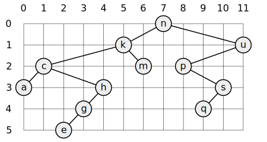
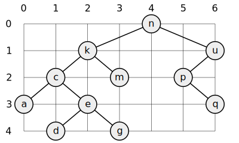

Problem 1
Function Name: last_
Find the last element of a list.
\( (x_0,x_2,\ldots,x_n)\mapsto x_n \)
Examples:
last_ [1..10]10last_ "abc"'c'
last_ [1..10]10last_ "abc"'c'
Problem 2
Function Name: penultimate_
Find the next-to-the-last element of a list.
\( (x_0,x_2,\ldots,x_{n-1},x_n)\mapsto x_{n-1} \)
Examples:
penultimate_ [1..10]9penultimate_ "abc"'b'
penultimate_ [1..10]9penultimate_ "abc"'b'
Problem 3
Function Name: element_at_index_
Find the \(k\)th element of a list. The first element in the list is number 0.
\( k, (x_0,x_1,\ldots,x_n)\mapsto x_{k} \)
Examples:
element_at_index_ 2 [0..10]2element_at_index_ 1 "abc"'b'
element_at_index_ 2 [0..10]2element_at_index_ 1 "abc"'b'
Problem 4
Function Name: length_
Find the number of elements of a list.
\( (x_1,\ldots,x_n)\mapsto n \)
Examples:
length_ [1..10]10length_ "abc"3
length_ [1..10]10length_ "abc"3
Problem 5
Function Name: reverse_
Reverse a list.
\( (x_0,x_1,\ldots,x_{n-1},x_n)\mapsto (x_n,x_{n-1},\ldots,x_{1},x_0)\)
Examples:
reverse_ [1..10][10, 9, 8, 7, 6, 5, 4, 3, 2, 1]reverse_ "abc""cba"
reverse_ [1..10][10, 9, 8, 7, 6, 5, 4, 3, 2, 1]reverse_ "abc""cba"
Problem 6
Function Name: palindromic_
Find out whether a list is a palindrome. A palindrome can be read forward or backward. For example "xamax".
\( (x_0,x_1,\ldots,x_{n-1},x_n)\mapsto \mathbf{True} \) if \(x_i=x_{n-i}\) and \(\mathbf{False}\) otherwise.
Examples:
palindromic_ "abc"Falsepalindromic_ "abcba"True
palindromic_ "abc"Falsepalindromic_ "abcba"True
Problem 7
Function Name: flatten_
Flatten a nested list structure.
\( \big(x_0,(x_1,x_2),((x_3,\ldots\big)\mapsto (x_0,x_1,x_2,x_3,\ldots) \)
Note:
Haskell's type system requires lists to be homogeneous (they must have the exact same type). So you cannot define arbitrarily nested lists. For this problem, you will need to define a data type that simulates nested lists. Use: data NestedList a = Elem a | List [NestedList a]
data NestedList a = Elem a | List [NestedList a]Examples:
flatten_ (Elem 1)[1]flatten_ (List [Elem 1, List [List [], Elem 2, List [Elem 3]], Elem 4])[1,2,3,4]
flatten_ (Elem 1)[1]flatten_ (List [Elem 1, List [List [], Elem 2, List [Elem 3]], Elem 4])[1,2,3,4]
Problem 8
Function Name: deduplicate_
Eliminate consecutive duplicates of list elements.
\( (a,a,a,b,a,a,c,c,c,\ldots)\mapsto (a,b,a,c,\ldots) \)
Examples:
deduplicate_ "aaaabccaadeeee""abcade"
deduplicate_ "aaaabccaadeeee""abcade"
Problem 9
Function Name: pack_duplicates_
Pack consecutive duplicates of list elements into sublists. If a list contains repeated elements they should be placed in separate sublists.
\( (a,a,a,b,a,a,c,c,c,\ldots)\mapsto \big((a,a,a),(b),(a,a),(c,c,c),\ldots\big) \)
Examples:
pack_duplicates_ "aaaabccaadeeee"["aaaa","b","cc","aa","d","eeee"]
pack_duplicates_ "aaaabccaadeeee"["aaaa","b","cc","aa","d","eeee"]
Problem 10
Function Name: runlength_encode_
Runlength encoding of a list. Use the result of earlier problems to implement the so-called run-length encoding data compression method. Consecutive duplicates of elements are encoded as lists \((e,n)\) where \(e\) is the value of the element and \(n\) is the number of duplicates.
\( (a,a,a,b,a,a,c,c,c,\ldots)\mapsto \big((a,3),(b,1),(a,2),(c,3),\ldots\big) \)
Examples:
runlength_encode_ "aaaabccaadeeee"[('a',3),('b',1),('c',2),('a',2),('d',1),('e',4)]
runlength_encode_ "aaaabccaadeeee"[('a',3),('b',1),('c',2),('a',2),('d',1),('e',4)]
Problem 11
Function Name: runlength_encode_b_
Modified run-length encoding. Modify the result of problem 10 in such a way that if an element has no duplicates it is simply copied into the result list. Only elements with duplicates are transferred as \((e,n)\) lists.
\( (a,a,a,b,a,a,c,c,c,\ldots)\mapsto \big((a,3),b,(a,2),(c,3),\ldots\big) \)
Note:
Haskell's type system requires lists to be homogeneous (they must have the exact same type), so you must create a new datatype which may be accomplished with: data RunLen a = Single a | Multiple Int a deriving Show
data RunLen a = Single a | Multiple Int a deriving ShowExamples:
runlength_encode_b_ "aaaabccaadeeee"[(Multiple 'a' 3),(Single 'b'),(Multiple 'c' 2),(Multiple 'a' 2),(Single 'd'),(Multiple 'e' 4)]
runlength_encode_b_ "aaaabccaadeeee"[(Multiple 'a' 3),(Single 'b'),(Multiple 'c' 2),(Multiple 'a' 2),(Single 'd'),(Multiple 'e' 4)]
Problem 12
Function Name: runlength_decode_
Decode a run-length encoded list. This should undo the encoding from problem 11.
\( \big((a,3),b,(a,2),(c,3),\ldots\big) \mapsto (a,a,a,b,a,a,c,c,c,\ldots) \)
Examples:
runlength_decode_ [(Multiple 'a' 3),(Single 'b'),(Multiple 'c' 2),(Multiple 'a' 2),(Single 'd'),(Multiple 'e' 4)]"aaaabccaadeeee"
runlength_decode_ [(Multiple 'a' 3),(Single 'b'),(Multiple 'c' 2),(Multiple 'a' 2),(Single 'd'),(Multiple 'e' 4)]"aaaabccaadeeee"
Problem 13
Function Name: _
(**) Run-length encoding of a list (direct solution).
Examples:
Problem 14
Function Name: double_
Double each element of a list.
\( (x_0,x_1,x_2,x_3,\ldots)\mapsto (x_0,x_0,x_1,x_1,x_2,x_2,x_2,x_3,x_3,\ldots) \)
Examples:
double_ [1..4][1,1,2,2,3,3,4,4]
double_ [1..4][1,1,2,2,3,3,4,4]
Problem 15
Function Name: repeat_
Repeat each element of a list a given number of times.
\( k,(x_0,x_1,\ldots)\mapsto (\underbrace{x_0,\ldots,x_0}_{k},\underbrace{x_1,\ldots,x_1}_{k},\ldots) \)
Examples:
repeat_ 3 [1..4][1,1,1,2,2,2,3,3,3,4,4,4]
repeat_ 3 [1..4][1,1,1,2,2,2,3,3,3,4,4,4]
Problem 16
Function Name: drop_sequence_
Drop every \(k\)th element from a list.
\( k,(x_1,x_2,\ldots)\mapsto (x_1,x_2,\ldots,x_{k-1},x_{k+1},\ldots,x_{2k-1},x_{2k+1},\ldots) \)
Examples:
drop_sequence_ 3 [1..10][1,2,4,5,7,8,10]
drop_sequence_ 3 [1..10][1,2,4,5,7,8,10]
Problem 17
Function Name: split_
When given a length, split a list into two parts with the first part being of the specified length.
\( k,(x_1,x_2,\ldots,x_n)\mapsto (x_1,x_2,\ldots,x_{k}),(x_{k+1},\ldots,x_{n}) \)
Examples:
split_ 3 [1..10]([1,2,3],[4,5,6,7,8,9,10])
split_ 3 [1..10]([1,2,3],[4,5,6,7,8,9,10])
Problem 18
Function Name: slice_
Extract a slice from a list. Given numbers \(i\) and \(j\), return a sublist consisting of elements whose indices are between \(i\) and \(j\).
\( i, j, (x_0, x_1,x_2,\ldots,x_n)\mapsto (x_i,x_{i+1},\ldots,x_{j}) \)
Examples:
slice_ 3 7 [0..10][3,4,5,6,7]
slice_ 3 7 [0..10][3,4,5,6,7]
Problem 19
Function Name: roll_
Rotate a list \(k\) places to the left.
\( k, (x_0,x_1,\ldots,x_n)\mapsto (x_k,x_{k+1},\ldots,x_{n}, x_0,x_1,\ldots,x_{k-1}) \)
Examples:
roll_ 3 [1..10][4,5,6,7,8,9,10,1,2,3]roll_ (-2) "abcdef""efabcd"
roll_ 3 [1..10][4,5,6,7,8,9,10,1,2,3]roll_ (-2) "abcdef""efabcd"
Problem 20
Function Name: pluck_
Remove the \(k\)th element from a list and return that element and the list with that element removed.
\( k, (x_0,x_1,\ldots,x_n)\mapsto x_k, (x_0,\ldots,x_{k-1},x_{k+1},\ldots,x_n) \)
Examples:
pluck_ 3 [0..10](3,[0,1,2,4,5,6,7,8,9,10])
pluck_ 3 [0..10](3,[0,1,2,4,5,6,7,8,9,10])
Problem 21
Function Name: insert_
Insert an element at a given position into a list.
\( k,e, (x_0,x_1,\ldots,x_n)\mapsto x_k, (x_0,\ldots,x_{k-1},e,x_{k},x_{k+1},\ldots,x_n) \)
Examples:
insert_ 3 15 [0..10][0,1,2,15,3,4,5,6,7,8,9,10]insert_ 4 'x' "abcdef""abcdxef"
insert_ 3 15 [0..10][0,1,2,15,3,4,5,6,7,8,9,10]insert_ 4 'x' "abcdef""abcdxef"
Problem 22
Function Name: range_
Create a list containing all integers within a given range.
\( i, j\mapsto (i, i+1, \ldots, j-1, j) \)
Examples:
range_ 3 8[3,4,5,6,7,8]
range_ 3 8[3,4,5,6,7,8]
Problem 23
Function Name: take_random_
Extract a given number of randomly selected elements from a list.
\( i, (x_1,\ldots,x_n)\mapsto (x_{a_1}, x_{a_2}, \ldots, x_{a_i}) \) where \((a_k)_{k=1,\ldots, i}\) is a random sequence with no repetitions.
Note:
Haskell is a purely functional language, so in order to get non-deterministic results, you must use monads . Read about monads in Haskell to get your bearings. To make Haskell's random-number monads available, add import System.Random to the top of your problems file. To get a single random number between \(i\) and \(j\) wrapped in a monad, you can use the code newStdGen >>= (\g -> return (head (randomRs (i, j) g)))
import System.Random to the top of your problems file. To get a single random number between \(i\) and \(j\) wrapped in a monad, you can use the code newStdGen >>= (\g -> return (head (randomRs (i, j) g)))Examples:
take_random_ "abcdefg"'c'take_random_ "abcdefg"'g'
take_random_ "abcdefg"'c'take_random_ "abcdefg"'g'
Problem 24
Function Name: lotto_
Lotto: Draw \(k\) different random numbers from the set \(1,2,\ldots, n\).
\( i,n \mapsto ({a_1}, {a_2}, \ldots, {a_i}) \) where \((a_k)_{k=1,\ldots, i}\) is a random sequence of integers with no repetitions satisfying \(1\leq a_k\leq n\).
Examples:
Problem 25
Function Name: permute_
Generate a random permutation of the elements of a list.
\( (x_1,\ldots,x_n)\mapsto (x_{a_1}, x_{a_2}, \ldots, x_{a_n}) \) where \((a_k)_{k=1,\ldots, n}\) is a random permutation of \(1,2,\ldots,n\).
Examples:
Problem 26
Function Name: combinations_
Generate all combinations of \(k\) elements from a list. For example, you might want to find all possible committees of size 3 from a list of names of size 12. There would be 220 such possibilities since the order of the comittee doesn't matter for combinations. You can read more about combinations at Wikipedia: Combinations.
\( k, (x_1,\ldots,x_n)\mapsto \big((x_1,\ldots,x_k), (x_1,x_3,\ldots,x_{k+1}),(x_1,x_2,x_4,\ldots,x_{k+1}),\ldots \big)\)
Examples:
Problem 27a
Function Name: group234_
List every way that a set of size 9 can be split into disjoint groups of sizes 2,3, and 4.
\( (x_1,\ldots,x_9)\mapsto \big([(x_1,x_2),(x_3,x_4,x_5),(x_6,\ldots,x_9)], [(x_1,x_3),(x_2,x_4,x_5),(x_6,\ldots,x_9)], \ldots \big)\)
Examples:
Problem 27b
Function Name: group_
Given a list of sizes \((a,b,c,\ldots)\), list every way that a set of size \(k\) can be split into disjoint groups of sizes \(a,b,c,\ldots\).
Examples:
Problem 28a
Function Name: sort_by_length_
Sort a list of lists according to length of sublists.
\( (L_1,\ldots,L_n)\mapsto (L_{a_1},\ldots,L_{a_n})\) satisfying \(|L_{a_i}|\leq |L_{a_j}|\) whenever \(i\leq j\).
Examples:
Problem 28b
Function Name: sort_by_length_frequency_
Sort a list of lists according the frequency with which the length of the list appears.
\( (L_1,\ldots,L_n)\mapsto (L_{a_1},\ldots,L_{a_n})\) satisfying \(\#\{k:|L_{k}|=|L_{a_i}|\}\leq \#\{k:|L_{k}|=|L_{a_j}|\}\) whenever \(i\leq j\).
Examples:
Problem 31
Function Name: prime_
Determine whether a given positive integer number is prime.
\( n\mapsto \mathbf{True}\) if \(n\) is prime and \(\mathbf{False}\) otherwise.
Examples:
Problem 32
Function Name: gcd_
Determine the greatest common divisor of two integers. Use Euclid's algorithm.
\( a,b\mapsto k\) satisfying \(k\geq 0\) and for any \(d\) so that \(d| a\) and \(d| b\) then \(d| k\).
Examples:
Problem 33
Function Name: coprime_
Determine whether two positive integer numbers are coprime. Two numbers are coprime if their greatest common divisor equals 1.
\( a,b\mapsto \mathbf{True}\) if \(\mathrm{gcd}(a,b)=1\) and \(\mathbf{False}\) otherwise.
Examples:
Problem 34
Function Name: totient_
Calculate Euler's totient function \(\phi(n)\). That is, the number of integers in the range \(1,2,\ldots,n\) that are relatively prime to \(n\).
\( \displaystyle n\mapsto \sum_{\substack{1\leq i\leq n\\\mathrm{gcd}(i,n)=1}} 1\)
Examples:
Problem 35
Function Name: factor_
List the prime factors of a given positive integer in ascending order, repeating factors if they occur multiple times.
\( n\mapsto (p_1,p_2,\ldots,p_k)\) satisfying that \(p_i\) is prime for all \(i\), \(p_i\leq p_j\) if \(i\leq j\), and \(\displaystyle n=p_1p_2\cdots p_k\).
Examples:
Problem 36
Function Name: factors_
List the prime factors of a given number and their multiplicity.
\( n\mapsto \big((p_1,a_1),(p_2,a_2),\ldots,(p_k,a_k)\big)\) satisfying that \(p_i\) is prime for all \(i\), \(p_i\leq p_j\) if \(i\leq j\), and \(n=p_1^{a_1}p_2^{a_2}\cdots p_k^{a_k}\).
Examples:
Problem 37
Function Name: efficient_totient_
Calculate Euler's totient function \(\phi(n)\) using the efficient formula \[\phi(n)=(p_1-1)p_1^{a_1-1}(p_2-1)p_2^{a_2-1}\cdots(p_k-1)p_k^{a_k-1}\] where \(n=p_1^{a_1}p_2^{a_2}\cdots p_k^{a_k}\) is the prime factorization of \(n\).
Examples:
Problem 38
Function Name: _
(*) Compare the two methods of calculating Euler's totient function.
Examples:
Problem 39
Function Name: primes_
List all prime numbers in a given range.
\( i,j\mapsto (p_1,p_2,\ldots, p_k)\) where \(i\leq p_n\leq j\) exhaustively list the primes between \(i\) and \(j\).
Examples:
Problem 40
Function Name: goldbach_
Goldbach's conjecture states that any even integer greater than 2 can be written as the sum of two primes. For example, \(28=5+23\). This conjecture has not been proved, but has been verified up to very large numbers. Given a number, write it as the sum of two primes.
\( 2n\mapsto p_1,p_2\) where \(p_1,p_2\) are prime and \(2n=p_1+p_2\).
Examples:
Problem 41
Function Name: goldbach_range_
Given a range of integers by its lower and upper limit, print a list of all even numbers and their Goldbach composition.
Examples:
Problem 46
Function Name: binary_truth_table_
Define binary functions for and, or, nand, nor, xor, implies, and equivalent (for logical equivalence) which succeed or fail according to the result of their respective operations; e.g. and(A,B) will succeed, if and only if both A and B succeed. Given a composition of binary operators that it itself a binary operator, make a truth table for it.
Examples:
Problem 47
Function Name: _
Modify the functions from 46 so they may be used as infix operators.
Examples:
Problem 48
Function Name: truth_table_
Given \(n\) variables and an \(n\)-ary boolean operator, construct a truth table.
Examples:
Problem 49
Function Name: gray_
Gray codes. A Gray code of length \(n\) is a list of all \(n\) bit sequences satisfying the property that adjacent elements in the list differ by exactly one bit. Read about Gray codes on Wikipedia and then enumerate Gray codes of length \(n\)
Examples:
gray_ 3["000","001","011","010","110","111","101","100"]
gray_ 3["000","001","011","010","110","111","101","100"]
Problem 50
Function Name: huffman_dictionary_
Huffman codes. Given a list of items and their frequency, a Huffman dictionary (or Huffman code) is a way to assign items to bit-strings in a maximally-efficient way. A consequence is that if an item appears more frequently, its bit-string representation is shorter. You can read about Huffman encoding on Wikipedi or watch a video on YouTube about how to build a Huffman dictionary.
\( (e_1,f_1), (e_2,f_2),\ldots \mapsto (e_1,c_1), (e_2,c_2),\ldots\) where \(e_i\) are items, \(f_i\) is the frequency of \(e_i\) and \(c_i\) is the Huffman code corresponding to \(e_i\).
Examples:
huffman_dictionary_ [('a',45),('b',13),('c',12),('d',16),('e',9),('f',5)][('a',"0"),('b',"101"),('c',"100"),('d',"111"),('e',"1101"),('f',"1100")]
huffman_dictionary_ [('a',45),('b',13),('c',12),('d',16),('e',9),('f',5)][('a',"0"),('b',"101"),('c',"100"),('d',"111"),('e',"1101"),('f',"1100")]
Problem 54A
Function Name: _
(*) Check whether a given term represents a binary tree
Examples:
Problem 55
Function Name: balanced_trees_
Enumerate balanced binary trees. In a completely balanced binary tree, the following property holds for every node: The number of nodes in its left subtree and the number of nodes in its right subtree are almost equal, which means their difference is not greater than one.
Note:
In Haskell you can create a tree data-structure with data Tree a = Empty | Branch a (Tree a) (Tree a) deriving Show
data Tree a = Empty | Branch a (Tree a) (Tree a) deriving ShowExamples:
balanced_trees_ 1[Branch 0 Empty Empty]balanced_trees_ 2[Branch 0 (Branch 0 Empty Empty) Empty,Branch 0 Empty (Branch 0 Empty Empty)]balanced_trees_ 4[Branch 0 (Branch 0 (Branch 0 Empty Empty) Empty) (Branch 0 Empty Empty),Branch 0 (Branch 0 Empty (Branch 0 Empty Empty)) (Branch 0 Empty Empty),Branch 0 (Branch 0 Empty Empty) (Branch 0 (Branch 0 Empty Empty) Empty),Branch 0 (Branch 0 Empty Empty) (Branch 0 Empty (Branch 0 Empty Empty))]
balanced_trees_ 1[Branch 0 Empty Empty]balanced_trees_ 2[Branch 0 (Branch 0 Empty Empty) Empty,Branch 0 Empty (Branch 0 Empty Empty)]balanced_trees_ 4[Branch 0 (Branch 0 (Branch 0 Empty Empty) Empty) (Branch 0 Empty Empty),Branch 0 (Branch 0 Empty (Branch 0 Empty Empty)) (Branch 0 Empty Empty),Branch 0 (Branch 0 Empty Empty) (Branch 0 (Branch 0 Empty Empty) Empty),Branch 0 (Branch 0 Empty Empty) (Branch 0 Empty (Branch 0 Empty Empty))]
Problem 56
Function Name: symmetric_tree_
Determine whether a given binary tree is symmetric. A binary tree is symmetric if, cutting at the root the left side's branches are a reflection of the right side's. That is, we only care about the structure of the tree and not the contents of the nodes.
Note:
In Haskell you can create a tree data-structure with data Tree a = Empty | Branch a (Tree a) (Tree a) deriving Show
data Tree a = Empty | Branch a (Tree a) (Tree a) deriving ShowExamples:
symmetric_tree_ (Branch 'x' (Branch 'x' Empty Empty) Empty)Falsesymmetric_tree_ (Branch 'x' (Branch 'x' Empty Empty) (Branch 'x' Empty Empty))Truesymmetric_tree_ (Branch 'x' (Branch 'y' Empty Empty) (Branch 'z' Empty Empty))True
symmetric_tree_ (Branch 'x' (Branch 'x' Empty Empty) Empty)Falsesymmetric_tree_ (Branch 'x' (Branch 'x' Empty Empty) (Branch 'x' Empty Empty))Truesymmetric_tree_ (Branch 'x' (Branch 'y' Empty Empty) (Branch 'z' Empty Empty))True
Problem 57
Function Name: construct_search_tree_
Construct a binary search tree (dictionary) of minimum depth from a list of numbers. Information about binary search trees can be found on Wikipedia.
Note:
In Haskell you can create a tree data-structure with data Tree a = Empty | Branch a (Tree a) (Tree a) deriving Show
data Tree a = Empty | Branch a (Tree a) (Tree a) deriving ShowExamples:
construct_search_tree_ [3, 2, 5, 7, 1]Branch 3 (Branch 2 (Branch 1 Empty Empty) Empty) (Branch 5 Empty (Branch 7 Empty Empty))symmetric_tree_ . construct_search_tree_ $ [3, 2, 5, 7, 4]Falsesymmetric_tree_ . construct_search_tree_ $ [5, 3, 18, 1, 4, 12, 21]True
construct_search_tree_ [3, 2, 5, 7, 1]Branch 3 (Branch 2 (Branch 1 Empty Empty) Empty) (Branch 5 Empty (Branch 7 Empty Empty))symmetric_tree_ . construct_search_tree_ $ [3, 2, 5, 7, 4]Falsesymmetric_tree_ . construct_search_tree_ $ [5, 3, 18, 1, 4, 12, 21]True
Problem 58
Function Name: balanced_symmetric_trees_
Construct all completely balanced, symmetric binary trees of a given size.
Note:
In Haskell you can create a tree data-structure with data Tree a = Empty | Branch a (Tree a) (Tree a) deriving Show
data Tree a = Empty | Branch a (Tree a) (Tree a) deriving ShowExamples:
balanced_symmetric_trees_ 5[Branch 0 (Branch 0 (Branch 0 Empty Empty) Empty) (Branch 0 Empty (Branch 0 Empty Empty)),
Branch 0 (Branch 0 Empty (Branch 0 Empty Empty)) (Branch 0 (Branch 0 Empty Empty) Empty)]
balanced_symmetric_trees_ 5[Branch 0 (Branch 0 (Branch 0 Empty Empty) Empty) (Branch 0 Empty (Branch 0 Empty Empty)),
Branch 0 (Branch 0 Empty (Branch 0 Empty Empty)) (Branch 0 (Branch 0 Empty Empty) Empty)]
Problem 59
Function Name: height_balanced_trees_of_height_
Given a height, construct all height-balanced binary trees of that height. In a height-balanced binary tree, the following property holds for every node: The height of its left subtree and the height of its right subtree are almost equal, which means their difference is not greater than one.
Note:
In Haskell you can create a tree data-structure with data Tree a = Empty | Branch a (Tree a) (Tree a) deriving Show
data Tree a = Empty | Branch a (Tree a) (Tree a) deriving ShowExamples:
height_balanced_trees_of_height_ 3[Branch 0 (Branch 0 (Branch 0 Empty Empty) (Branch 0 Empty Empty)) (Branch 0 (Branch 0 Empty Empty) (Branch 0 Empty Empty)),
Branch 0 (Branch 0 (Branch 0 Empty Empty) (Branch 0 Empty Empty)) (Branch 0 (Branch 0 Empty Empty) Empty),
Branch 0 (Branch 0 (Branch 0 Empty Empty) (Branch 0 Empty Empty)) (Branch 0 Empty (Branch 0 Empty Empty)),
Branch 0 (Branch 0 (Branch 0 Empty Empty) Empty) (Branch 0 (Branch 0 Empty Empty) (Branch 0 Empty Empty)),
Branch 0 (Branch 0 (Branch 0 Empty Empty) Empty) (Branch 0 (Branch 0 Empty Empty) Empty),
Branch 0 (Branch 0 (Branch 0 Empty Empty) Empty) (Branch 0 Empty (Branch 0 Empty Empty)),
Branch 0 (Branch 0 Empty (Branch 0 Empty Empty)) (Branch 0 (Branch 0 Empty Empty) (Branch 0 Empty Empty)),
Branch 0 (Branch 0 Empty (Branch 0 Empty Empty)) (Branch 0 (Branch 0 Empty Empty) Empty),
Branch 0 (Branch 0 Empty (Branch 0 Empty Empty)) (Branch 0 Empty (Branch 0 Empty Empty)),
Branch 0 (Branch 0 (Branch 0 Empty Empty) (Branch 0 Empty Empty)) (Branch 0 Empty Empty),
Branch 0 (Branch 0 (Branch 0 Empty Empty) Empty) (Branch 0 Empty Empty),
Branch 0 (Branch 0 Empty (Branch 0 Empty Empty)) (Branch 0 Empty Empty),
Branch 0 (Branch 0 Empty Empty) (Branch 0 (Branch 0 Empty Empty) (Branch 0 Empty Empty)),
Branch 0 (Branch 0 Empty Empty) (Branch 0 (Branch 0 Empty Empty) Empty),
Branch 0 (Branch 0 Empty Empty) (Branch 0 Empty (Branch 0 Empty Empty))]
height_balanced_trees_of_height_ 3[Branch 0 (Branch 0 (Branch 0 Empty Empty) (Branch 0 Empty Empty)) (Branch 0 (Branch 0 Empty Empty) (Branch 0 Empty Empty)),
Branch 0 (Branch 0 (Branch 0 Empty Empty) (Branch 0 Empty Empty)) (Branch 0 (Branch 0 Empty Empty) Empty),
Branch 0 (Branch 0 (Branch 0 Empty Empty) (Branch 0 Empty Empty)) (Branch 0 Empty (Branch 0 Empty Empty)),
Branch 0 (Branch 0 (Branch 0 Empty Empty) Empty) (Branch 0 (Branch 0 Empty Empty) (Branch 0 Empty Empty)),
Branch 0 (Branch 0 (Branch 0 Empty Empty) Empty) (Branch 0 (Branch 0 Empty Empty) Empty),
Branch 0 (Branch 0 (Branch 0 Empty Empty) Empty) (Branch 0 Empty (Branch 0 Empty Empty)),
Branch 0 (Branch 0 Empty (Branch 0 Empty Empty)) (Branch 0 (Branch 0 Empty Empty) (Branch 0 Empty Empty)),
Branch 0 (Branch 0 Empty (Branch 0 Empty Empty)) (Branch 0 (Branch 0 Empty Empty) Empty),
Branch 0 (Branch 0 Empty (Branch 0 Empty Empty)) (Branch 0 Empty (Branch 0 Empty Empty)),
Branch 0 (Branch 0 (Branch 0 Empty Empty) (Branch 0 Empty Empty)) (Branch 0 Empty Empty),
Branch 0 (Branch 0 (Branch 0 Empty Empty) Empty) (Branch 0 Empty Empty),
Branch 0 (Branch 0 Empty (Branch 0 Empty Empty)) (Branch 0 Empty Empty),
Branch 0 (Branch 0 Empty Empty) (Branch 0 (Branch 0 Empty Empty) (Branch 0 Empty Empty)),
Branch 0 (Branch 0 Empty Empty) (Branch 0 (Branch 0 Empty Empty) Empty),
Branch 0 (Branch 0 Empty Empty) (Branch 0 Empty (Branch 0 Empty Empty))]
Problem 60
Function Name: height_balanced_trees_
Given a number of nodes, construct all height-balanced binary trees with that number of nodes. It might help to first find the maximum and minimum number of nodes that a height-balanced tree of a certain height can have.
Examples:
Problem 61a
Function Name: count_leaves_
Count the leaves of a binary tree. A leaf is a node with no successor.
Examples:
Problem 61b
Function Name: leaves_
Find the leaves of a binary tree.
Examples:
Problem 62a
Function Name: nodes_
Find the internal nodes of a binary tree. That is, all of the non-leaf nodes.
Examples:
Problem 62b
Function Name: nodes_at_height_
Find the nodes at a given height in a tree.
Examples:
Problem 63
Function Name: complete_tree_
Construct a complete binary tree. A complete binary tree of height \(h\) is one where every level up to \(h-1\) is full and all nodes at level \(h\) are as left as possible.
Examples:
Problem 64
Function Name: layout_tree_
Layout a tree. As a preparation for drawing the tree, a layout algorithm is required to determine the position of each node in a rectangular grid. Several layout methods are conceivable, one of them is shown in the illustration below:

Examples:
Problem 65
Function Name: layout_tree_spaced_
Layout a tree in a more spaced out way. An alternative layout method is depicted in the illustration below: 
Examples:
Problem 66
Function Name: layout_tree_compact_
Layout a tree in a compact way. Yet another layout strategy is shown in the illustration below:

Examples:
Problem 67A
Function Name: tree_to_string_
A string representation of binary trees
Examples:
Problem 68
Function Name: _
Preorder and inorder sequences of binary trees. We consider binary trees with nodes that are identified by single lower-case letters, as in the example of problem P67.
Examples:
Problem 69
Function Name: _
Dotstring representation of binary trees.
Examples:
Problem 70B
Function Name: _
(*) Check whether a given term represents a multiway tree.
Examples:
Problem 70C
Function Name: _
(*) Count the nodes of a multiway tree.
Examples:
Problem 70
Function Name: _
(**) Tree construction from a node string.
Examples:
Problem 71
Function Name: _
(*) Determine the internal path length of a tree.
Examples:
Problem 72
Function Name: _
(*) Construct the bottom-up order sequence of the tree nodes.
Examples:
Problem 73
Function Name: _
(**) Lisp-like tree representation.
Examples:
Problem 80
Function Name: _
(***) Conversions
Examples:
Problem 81
Function Name: _
(**) Path from one node to another one
Examples:
Problem 82
Function Name: _
(*) Cycle from a given node
Examples:
Problem 83
Function Name: _
(**) Construct all spanning trees
Examples:
Problem 84
Function Name: _
(**) Construct the minimal spanning tree
Examples:
Problem 85
Function Name: _
(**) Graph isomorphism
Examples:
Problem 86
Function Name: _
(**) Node degree and graph coloration
Examples:
Problem 87
Function Name: _
(**) Depth-first order graph traversal (alternative solution)
Examples:
Problem 88
Function Name: _
(**) Connected components (alternative solution)
Examples:
Problem 89
Function Name: _
(**) Bipartite graphs
Examples:
Problem 90
Function Name: _
(**) Eight queens problem
Examples:
Problem 91
Function Name: _
(**) Knight's tour
Examples:
Problem 92
Function Name: _
(***) Von Koch's conjecture
Examples:
Problem 93
Function Name: _
(***) An arithmetic puzzle
Examples:
Problem 94
Function Name: _
(***) Generate K-regular simple graphs with N nodes
Examples:
Problem 95
Function Name: _
(**) English number words
Examples:
Problem 96
Function Name: _
(**) Syntax checker
Examples:
Problem 97
Function Name: _
(**) Sudoku
Examples:
Problem 98
Function Name: _
(***) Nonograms
Examples:
Problem 99
Function Name: _
(***) Crossword puzzle